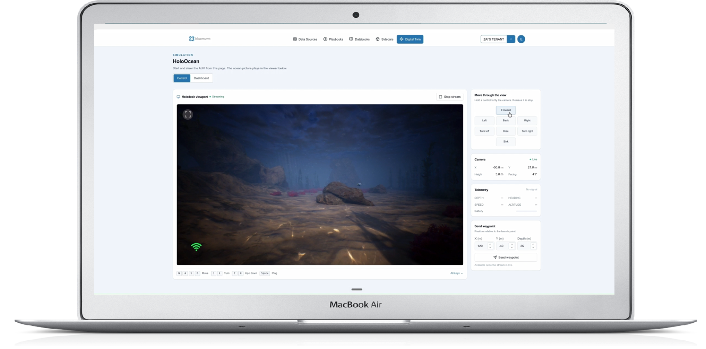

01 Executive Summary & Strategic Context
This section establishes the framework for Nova Scotia's ambitious offshore wind expansion. Operating in the harsh marine environment of the Northwest Atlantic introduces substantial engineering, operational, and regulatory complexity. Use the interactive cards below to explore key strategic drivers.
🌊 Scale & Grid Transition
Targeting 5 GW by 2030, the Wind West initiative provides a foundational platform for green hydrogen production, regional electrification, and long-term decarbonization across Eastern Canada.
⚓ Multi-Modal Data Ingestion
Integrating disparate bathymetric sonar, glaciomarine till geology, metocean time-series, severe wave loading data, and marine mammal acoustic tracks requires an enterprise-grade digital architecture.
⚡ Bluemvmt Cloud Platform (BCP)
BCP provides an AI-native data orchestration, 3D physics digital twinning, and conversational analytics engine to unify complex spatial, temporal, and unstructured datasets into a single operational fabric.
02 Scotian Shelf Potential Development Areas (PDAs) Explorer
The IAAC Final Regional Assessment Report (160595E) evaluates spatial interactions across eight candidate offshore bank zones. Interact with the spatial canvas map below to select PDAs and compare technical specifications dynamically.
Interactive Scotian Shelf Spatial Map
Click any PDA node on the canvas to inspect site specs
Sable Island Bank
PDA Surface Area Comparison (km²)
PDA Technical Specifications Baseline
| Potential Development Area | Surface Area (km²) | Foundation Type | Capacity Target | Environmental Profile |
|---|---|---|---|---|
| Sydney Bight | 1,435 | Fixed-Bottom | 500 MW | Shallow inner-shelf, proximity to Cape Breton grid connection hubs. |
| Sable Island Bank | 5,620 | Fixed-Bottom | 2,000+ MW Hub | High-velocity wind regime, severe storm wave loading. |
| Western / Emerald Bank | 13,170 | Floating | Major Capacity Hub | Deep-water basin subject to intense cyclonic conditions. |
| French Bank | 2,855 | Floating | 500 MW | Intermediate-to-deep water requiring floating platforms. |
| Middle Bank | 1,445 | Fixed / Floating Hybrid | Regional Allocation | Mid-shelf location with active commercial harvesting zones. |
| Misaine Bank | 2,830 | Floating | Regional Allocation | Outer-shelf waters with high marine mammal traffic. |
| LaHave Bank | 3,415 | Floating | Regional Allocation | Southwestern Scotian Shelf location with ocean currents. |
| Canso Bank | 430 | Fixed-Bottom | Nearshore Hub | Nearshore structural pocket ideal for pilot testing. |
03 Bluemvmt Cloud Platform Technical Capabilities
Explore the two core technical pillars of the Bluemvmt Cloud Platform engineered to address IAAC assessment requirements. Switch between tabs below to view detailed screenshot callouts.
Unified Maritime Data Fabric
The platform normalizes disparate marine datasets—including GSF bathymetry, NetCDF oceanographic grids, XTF side-scan sonar, LAS point clouds, and live MQTT sensor feeds. Powered by Google BigQuery, PostgreSQL, and pgvector, BCP provides conversational search via Data Insight AI™.
- Vectorized Search: Query multi-modal datasets with plain-language AI prompts.
- Databooks & Playbooks: Automated execution of environmental workflows.
- Cross-Device Responsive: Accessible across desktop workstations and mobile field tablets.
Figure 1: Bluemvmt Maritime Information Workspace showing vectorized dataset library, Databooks, and Playbooks.
3D Digital Twin & HoloOcean Integration
BCP integrates a browser-accessible 3D digital twin environment powered by the HoloOcean physics engine and Unreal Engine 5.3 pixel-streamed directly to web clients.
- Mooring Line Dynamics: Simulate floating turbine cable stress in severe storms.
- Bellhop Acoustic Modeling: Real-time subsea acoustic propagation for species safety.
- AUV Autonomy: Test subsea inspection paths prior to vessel deployment.

Figure 2: Bluemvmt HoloOcean 3D simulation viewport providing real-time subsea rendering and AUV telemetry.
04 Project Lifecycle Technical Mapping
Cross-referencing IAAC 160595E primary challenges against BCP capabilities and business value.
| Lifecycle Phase | IAAC 160595E Primary Challenges | Applicable BCP Capability | Value Delivered |
|---|---|---|---|
| Phase 1: Early Site Assessment | Processing disparate sonar, bathymetry, and glaciomarine till datasets across 8 PDAs. | Unified Data Fabric & Vectorized Search | Ingests multi-modal survey datasets; reduces site data prep timelines by up to 10x. |
| Phase 2: Permitting & Impact Assessment | Acoustic monitoring for marine life; hurricane wave extremes; Indigenous co-management transparency. | Automated Playbooks & Casbin RBAC | Executes passive acoustic modeling; shares secure dashboards with regulators and First Nations. |
| Phase 3: Design & Micro-Siting | Designing fixed vs. floating foundations for Scotian Shelf cyclonic storm loading. | HoloOcean 3D & WeatherBench 2 Models | Provides UE5.3 browser rendering; simulates storm surges on mooring cables to optimize turbine placement. |
| Phase 4: Operations & Asset IMR | Offshore installation logistics in narrow weather windows; submerged asset inspection. | Edge Container Sidecars & Data Insight AI™ | Deploys local sidecars aboard survey vessels; enables conversational telemetry queries. |
05 Strategic Implementation Roadmap & Efficiency Calculator
Review the three-phase deployment plan and utilize the interactive dynamic calculator to estimate platform processing time savings for Wind West survey datasets.
Technical POC
Ingest publicly available marine spatial data from IAAC 160595E into a dedicated BCP trial instance to demonstrate 10x data acceleration and 3D floating turbine simulations in French Bank.
Regulatory Data Fabric
Configure Casbin access control to establish a federated workspace for regulators, developers, and First Nations partners, automating acoustic threshold playbooks.
Developer Consortia Integration
Provision Customer Dedicated Sidecar (CDS) clusters on Google Kubernetes Engine (GKE) for commercial lease bidders, integrating IoT feeds and predictive weather models.
Interactive Data Acceleration Calculator
Adjust the survey dataset size below to see estimated time savings delivered by BCP's vectorized ingestion pipeline.